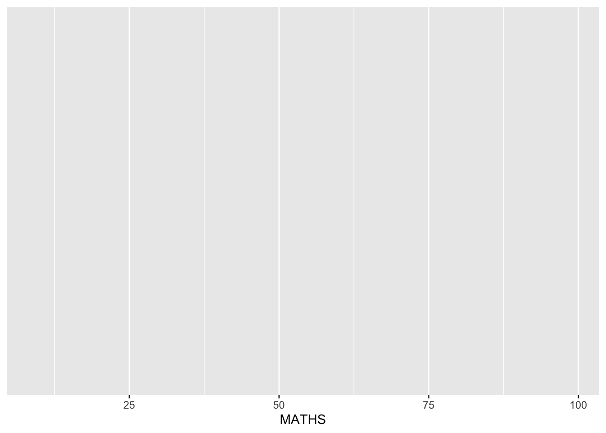
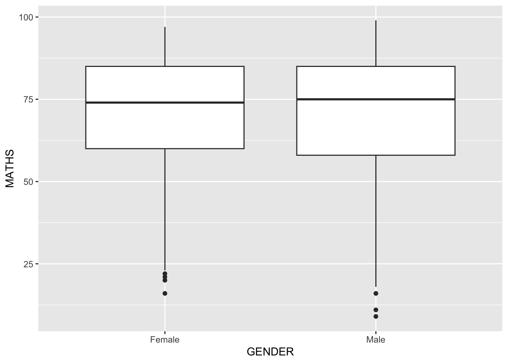
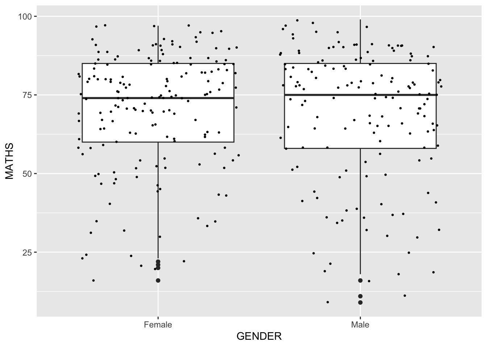

pacman::p_load(tidyverse,patchwork)Hands-on Exercise 1
Getting Started
Install and launching R packages
The code chunk below uses p_load() of pacman package to chheck if tidyverse packages are installed in the computer.If they are, then they will be launched into R.
Importing the data
exam_data <- read_csv("data/Exam_data.csv")Introducing ggplot
ggplot2 is an R package for declaratively creating data-driven graphics based on The Grammar of Graphics.
R Graphics VS ggplot
hist(exam_data$MATHS)
ggplot(data=exam_data, aes(x = MATHS)) +
geom_histogram(bins=10,
boundary = 100,
color="black",
fill="grey") +
ggtitle("Distribution of Maths scores")
Grammar of Graphics
Figure below shows the seven grammars of ggplot2.

A short description of each building block are as follows:
Data: The dataset being plotted.
Aesthetics take attributes of the data and use them to influence visual characteristics, such as position, colours, size, shape, or transparency.
Geometrics: The visual elements used for our data, such as point, bar or line.
Facets split the data into subsets to create multiple variations of the same graph (paneling, multiple plots).
Statistics, statiscal transformations that summarise data (e.g. mean, confidence intervals).
Coordinate systems define the plane on which data are mapped on the graphic.
Themes modify all non-data components of a plot, such as main title, sub-title, y-aixs title, or legend background.
Essential Grammatical Elements in ggplot2: data
ggplot(data=exam_data)
A blank canvas appears.
ggplot() initializes a ggplot object.
The data argument defines the dataset to be used for plotting.
If the dataset is not already a data.frame, it will be converted to one by fortify().
Essential Grammatical Elements in ggplot2: Aesthetic mappings
Code chunk below adds the aesthetic element into the plot. ggplot includes the x-axis and the axis’s label.
ggplot(data=exam_data,
aes(x= MATHS))
Essential Grammatical Elements in ggplot2: geom
Geometric Objects: geom_bar
ggplot(data=exam_data,
aes(x= MATHS))
Geometric Objects: geom_dotplot
ggplot(data=exam_data,
aes(x = MATHS)) +
geom_dotplot(dotsize = 0.5)
The code chunk below performs the following two steps: - scale_y_continuous() is used to turn off the y-axis, and - binwidth argument is used to change the binwidth to 2.5.
ggplot(data=exam_data,
aes(x = MATHS)) +
geom_dotplot(binwidth=2.5,
dotsize = 0.5) +
scale_y_continuous(NULL,
breaks = NULL) 
Geometric Objects: geom_histogram()
ggplot(data=exam_data,
aes(x = MATHS)) +
geom_histogram() 
Note that the default bin is 30.
Modifying a geometric object by changing geom()
In the code chunk below,
- bins argument is used to change the number of bins to 20
- fill argument is used to shade the histogram with color
- color argument is used to change the outline colour of the bars
- geom_vline is used to add mean and median lines
- annotate is used to include descriptions for each line
ggplot(data=exam_data,
aes(x=MATHS)) +
geom_histogram(bins=20,
color="grey30",
fill="#E1C8C4") +
labs(x = "Math Score",
y = "No. of Pupils",
title = "Distribution of Math Scores") +
geom_vline(aes(xintercept=median(exam_data$MATHS, na.rm=T)),
color="#595DE5", linewidth=1, linetype="dashed") +
# Add line annotations
annotate(
"text",
x = 82,
y = 50,
label = paste("Median =", round(median(exam_data$MATHS, na.rm=T), 3)),
color = "#595DE5",
size = 3.5
) +
geom_vline(aes(xintercept=mean(exam_data$MATHS, na.rm=T)),
colour="red", linewidth=1, linetype="dashed") +
# Add line annotations
annotate(
"text",
x = 60,
y = 42,
label = paste("Mean =", round(mean(exam_data$MATHS, na.rm=T), 3)),
color = "red",
size = 3.5
) +
theme(plot.background=element_rect(fill="#f5f5f5",colour="#f5f5f5")) # Original
b_p1 <- ggplot(data=exam_data,
aes(x=MATHS)) +
geom_histogram(bins=20,
boundary = 100,
#binwidth=5,
color= 'white',
fill='grey') +
theme_gray() +
theme(panel.background=element_rect(fill='grey96')) +
labs(x = "Math Score",
y = "No. of Pupils",
title = "20 bins") +
theme(plot.background=element_rect(fill="#f5f5f5",colour="#f5f5f5"))
# Changed
b_p2 <- ggplot(data=exam_data,
aes(x=MATHS)) +
geom_histogram(bins=30,
boundary = 100,
#binwidth=5,
color= 'white',
fill='grey') +
theme_gray() +
theme(panel.background=element_rect(fill='grey96')) +
labs(x = "Math Score",
y = "No. of Pupils",
title = "30 bins") +
theme(plot.background=element_rect(fill="#f5f5f5",colour="#f5f5f5"))
# format plot layout
b_p1 + b_p2
# Original
bw_p1 <- ggplot(data=exam_data,
aes(x=MATHS)) +
geom_histogram(bins=20,
boundary = 100,
#binwidth=5,
color= 'white',
fill='grey') +
theme_gray() +
theme(panel.background=element_rect(fill='grey96')) +
labs(x = "Math Score",
y = "No. of Pupils",
title = "20 bins") +
theme(plot.background=element_rect(fill="#f5f5f5",colour="#f5f5f5"))
# Changed
bw_p2 <- ggplot(data=exam_data,
aes(x=MATHS)) +
geom_histogram(#bins=20,
boundary = 100,
binwidth=5,
color= 'white',
fill='grey') +
theme_gray() +
theme(panel.background=element_rect(fill='grey96')) +
labs(x = "Math Score",
y = "No. of Pupils",
title = "Binwidth 5 = 19 bins") +
theme(plot.background=element_rect(fill="#f5f5f5",colour="#f5f5f5"))
# format plot layout
bw_p1 + bw_p2# Original
bb_p1 <- ggplot(data=exam_data,
aes(x=MATHS)) +
geom_histogram(bins=20,
boundary = 100,
#binwidth=5,
color= 'white',
fill='grey') +
theme_gray() +
theme(panel.background=element_rect(fill='grey96')) +
labs(x = "Math Score",
y = "No. of Pupils",
title = "Bin alignment using boundary") +
theme(plot.background=element_rect(fill="#f5f5f5",colour="#f5f5f5"))
# Changed
bb_p2 <- ggplot(data=exam_data,
aes(x=MATHS)) +
geom_histogram(bins=20,
center = 50,
#binwidth=5,
color= 'white',
fill='grey') +
theme_gray() +
theme(panel.background=element_rect(fill='grey96')) +
labs(x = "Math Score",
y = "No. of Pupils",
title = "Bin alignment using center") +
theme(plot.background=element_rect(fill="#f5f5f5",colour="#f5f5f5"))
# format plot layout
bb_p1 + bb_p2Modifying a geometric object by changing aes()
ggplot(data=exam_data,
aes(x= MATHS,
fill = GENDER)) +
geom_histogram(bins=20,
color="grey30") 
Geometric Objects: geom-density()
ggplot(data=exam_data,
aes(x = MATHS)) +
geom_density() 
Geometric Objects: geom_boxplot()
ggplot(data=exam_data,
aes(y = MATHS,
x= GENDER)) +
geom_boxplot() 
The code chunk below plots the distribution of Maths scores by gender in notched plot instead of boxplot.
ggplot(data=exam_data,
aes(y = MATHS,
x= GENDER)) +
geom_boxplot(notch=TRUE) 
Geometric Objects: geom_violin
ggplot(data=exam_data,
aes(y = MATHS,
x= GENDER)) +
geom_violin() 
Geometric Objects: geom_point()
ggplot(data=exam_data,
aes(x= MATHS,
y=ENGLISH)) +
geom_point() 
geom objects can be combined
ggplot(data=exam_data,
aes(y = MATHS,
x= GENDER)) +
geom_boxplot() +
geom_point(position="jitter",
size = 0.5) 
Essential Grammatical Elements in ggplot2: stat
- add a stat_() function and override the default geom.
- add a geom_() function and override the default stat.
Working with stat()
The boxplots below are incomplete because the positions of the means were not shown.
ggplot(data=exam_data,
aes(y = MATHS, x= GENDER)) +
geom_boxplot() 
Working with stat - the stat_summary() method
ggplot(data=exam_data,
aes(y = MATHS, x= GENDER)) +
geom_boxplot() +
stat_summary(geom = "point",
fun.y="mean",
colour ="red",
linewidth=4) Working with stat - the geom() method
ggplot(data=exam_data,
aes(y = MATHS, x= GENDER)) +
geom_boxplot() +
geom_point(stat="summary",
fun.y="mean",
colour ="red",
linewidth=4) 
Adding a best fit curve on a scatterplot - geom_smooth()
ggplot(data=exam_data,
aes(x= MATHS, y=ENGLISH)) +
geom_point() +
geom_smooth(size=0.5) 
ggplot(data=exam_data,
aes(x= MATHS,
y=ENGLISH)) +
geom_point() +
geom_smooth(method=lm,
size=0.5) 
Essential Grammatical Elements in ggplot2: Facets
Facetting generates small multiples (sometimes also called trellis plot), each displaying a different subset of the data.
facet_grid() and facet_wrap
Working with facet_wrap()
ggplot(data=exam_data,
aes(x= MATHS)) +
geom_histogram(bins=20) +
facet_wrap(~ CLASS) 
facet_grid() function
ggplot(data=exam_data,
aes(x= MATHS)) +
geom_histogram(bins=20) +
facet_grid(~ CLASS) 
Essential Grammatical Elements in ggplot2: Coordinates
Working with Coordinate
ggplot(data=exam_data,
aes(x=RACE)) +
geom_bar() 
coord_flip()
ggplot(data=exam_data,
aes(x=RACE)) +
geom_bar() +
coord_flip() 
Changing the y- and x-axis range
ggplot(data=exam_data,
aes(x= MATHS, y=ENGLISH)) +
geom_point() +
geom_smooth(method=lm, linewidth=0.5) The code below fixed both the y-axis and x-axis range from 0-100.
ggplot(data=exam_data,
aes(x= MATHS, y=ENGLISH)) +
geom_point() +
geom_smooth(method=lm,
size=0.5) +
coord_cartesian(xlim=c(0,100),
ylim=c(0,100))Essential Grammatical Elements in ggplot2: themes
- theme_gray() (default) - theme_bw() - theme_classic()
Working with theme
ggplot(data=exam_data,
aes(x=RACE)) +
geom_bar() +
coord_flip() +
theme_gray()
ggplot(data=exam_data,
aes(x=RACE)) +
geom_bar() +
coord_flip() +
theme_classic()
ggplot(data=exam_data,
aes(x=RACE)) +
geom_bar() +
coord_flip() +
theme_minimal()